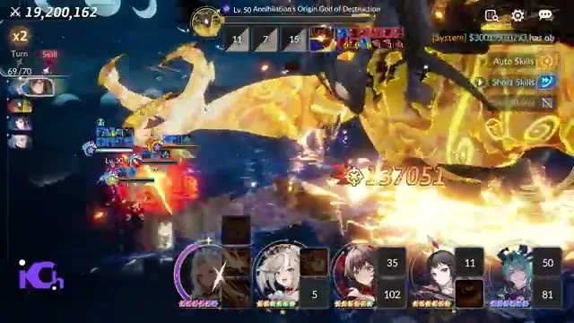
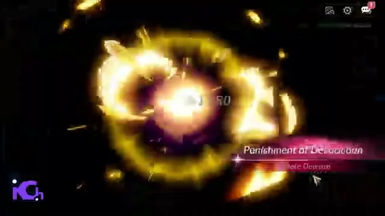
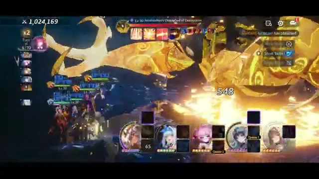
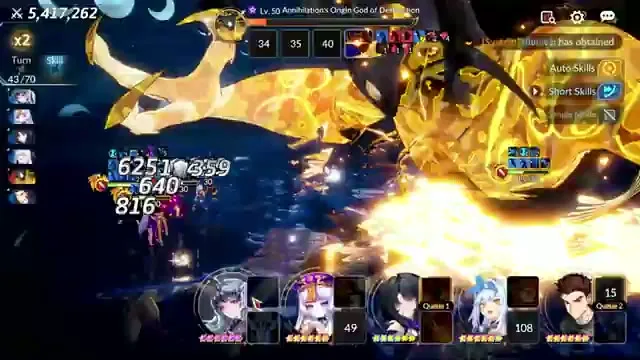
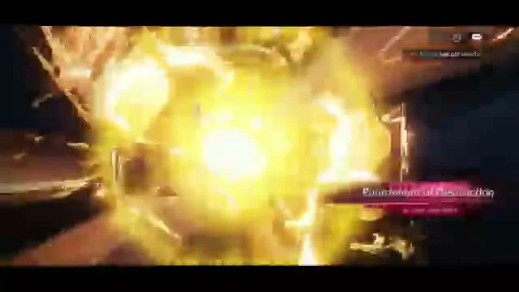

God of Destruction — Meta Judas 20M
KiChi Frame · 9,3N lượt xem · 4 ngày trước — Meta mới dùng Judas, lên tới 20M điểm.
Xem video ↗Video hướng dẫn đánh God of Destruction — xem đội hình và cách đánh chi tiết trong video.
Video tiếng Việt, thực chiến đạt 2,8M điểm.
Video: Xem trên YouTube ↗
7 bài viết

KiChi Frame · 9,3N lượt xem · 4 ngày trước — Meta mới dùng Judas, lên tới 20M điểm.
Xem video ↗
7KDreamer Plays · 6,4N lượt xem · 2 ngày trước — Đội hình Judas mới đạt điểm cao trước God of Destruction.
Xem video ↗
KiChi Frame · 12N lượt xem · 1 tháng trước — Meta Eileene thức tỉnh, đội hình ai cũng có thể dùng.
Xem video ↗
Ren7k · 300 lượt xem · 1 tháng trước — Hướng dẫn dễ làm theo, đạt 16,5M với Eileene thức tỉnh.
Xem video ↗
7KDreamer Plays · 11N lượt xem · 4 tháng trước — Dùng Heavenia để tăng điểm số.
Xem video ↗
7KDreamer Plays · 5,8N lượt xem · 2 tháng trước — So sánh support Sunran và Melia, đánh trong 4 và 8 lượt.
Xem video ↗
Ren7k · 896 lượt xem · 2 tháng trước — Trang bị và thứ tự xoay kỹ năng với Shane/Sunran, đạt 13,5M.
Xem video ↗